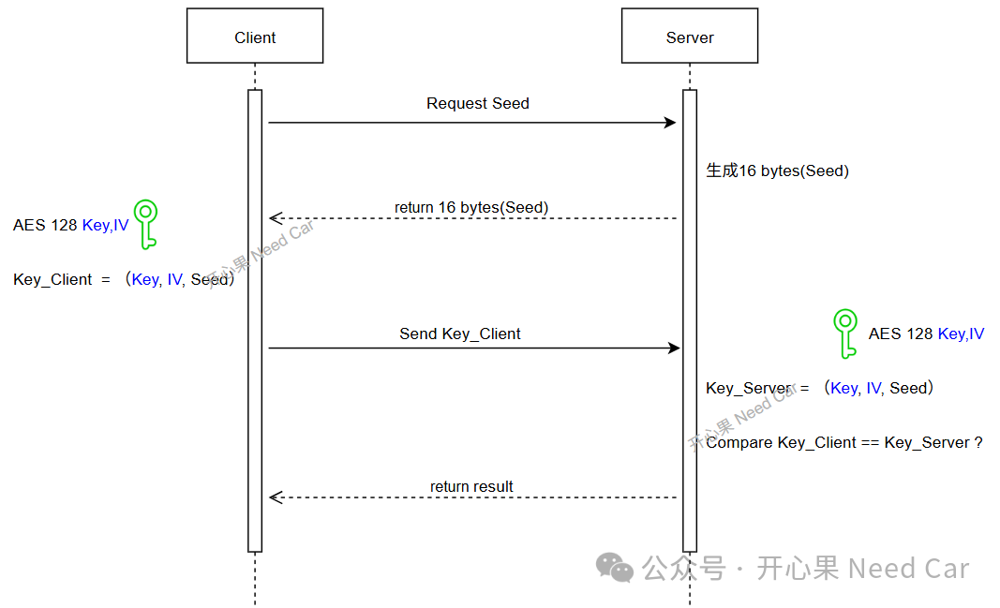
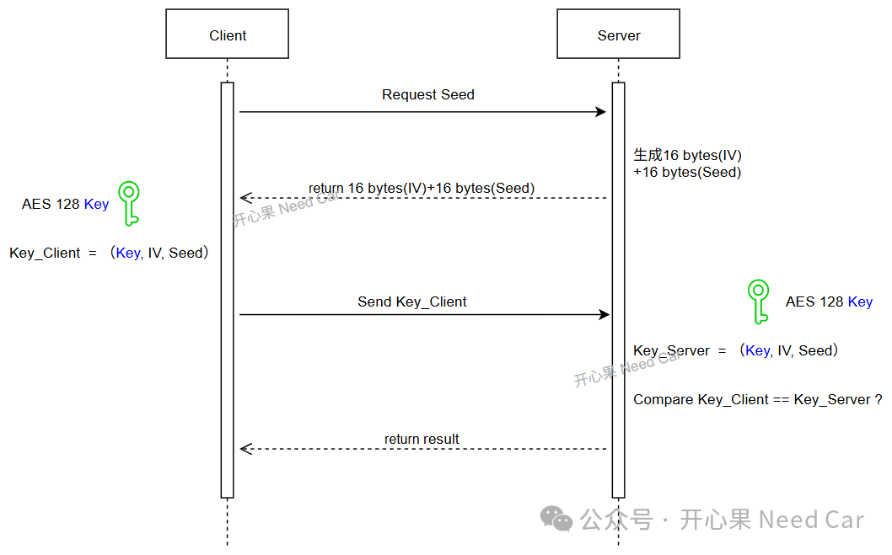

开心果 Need Car · 2026-04-08T06:22:00+08:00 · 微信原文
UDS（Unified Diagnostic Services, ISO‑14229）中的 0x27（Security Access） 服务是车辆ECU常用的鉴权机制，目的是防止未经授权的诊断工具对车辆执行控制类操作，如：编程、刷新、标定等操作。主机（诊断仪）向ECU请求Seed，ECU返回随机种子，主机基于 Seed 计算 Key，再返回给 ECU 验证。此过程的安全性完全取决于“Seed‑Key 计算算法”的强度。
在实际量产项目中，Seed‑Key 的实现方式主要有两类：
传统算法：如：XOR（异或运算）、查表、简单自定义函数、线性变换等。
现代加密算法：最常见的是 AES‑128，其中 CBC（Cipher Block Chaining，密文分组链接） 模式在车载安全设计中应用广泛。
本文从安全性、实现复杂度、攻防能力、硬件资源匹配度、未来法规适配性等维度，深入比较两类方案的特点，并说明为何 AES‑128 CBC 正逐渐成为车规 UDS 0x27 的主流实现方式。
一、传统 Seed‑Key 算法的特点与局限
许多早期车型或低安全等级功能采用传统算法，例如：
多轮异或（XOR）
常量查表（lookup table）
简单循环移位
种子加上固定偏移（seed + constant）
基于固定 pattern 的线性混淆逻辑
这些算法具有一些优势，如：实现简单、资源需求低、移植方便，但也暴露出显著弱点。
❌ 劣势1：极易被逆向。传统算法属于“安全性通过模糊性（security by obscurity）”的范畴，只要攻击者：抓到一组Seed–Key对，或反编译固件或利用车载诊断数据记录器。就很容易分析出算法规律。一旦规律被发现，0x27 失去全部安全性。
❌ 劣势 2：无法抵抗重放攻击（Replay Attack）。若 Seed 来源不够随机，传统算法往往会出现：Seed 相同，进而 Key 也相同的场景，攻击者可通过重放某次抓到的数据，轻易骗过ECU。
❌ 劣势 3：无法满足新法规与OEM要求。随着 ISO 21434、UNECE R155 出台，OEM 要求逐年提升：不允许弱加密、不允许线性算法、必须具备可验证强度。传统算法几乎无法通过安全审核。
二、AES‑128 CBC 模式在 UDS 0x27 中的应用
AES‑128 已是国际广泛采用的对称加密标准，而 CBC（Cipher Block Chaining）是一种链式分组模式，通过“明文 XOR 前一轮密文”增强随机性，使每次加密输出都不同，即便输入部分相同。
在 UDS 0x27 中，典型流程为：
Seed = 随机数
Key = AES128-CBC(Seed, KeyID, IV)
其中，IV（Initialization Vector，初始化向量）。
（一）AES‑128 CBC 模式在 UDS 0x27 中的优势
✅ 优势 1：强安全性得到国际认可
128-bit key 的暴力破解成本极高
AES 已在金融、军工、安全通信等领域广泛应用
CBC 模式进一步提高密文不可预测性
相当于从“玩具级防护”升级到“专业级防护”，即便攻击者拥有大量 Seed/Key 样本，也无法反推密钥。
✅ 优势 2：能有效抗重放攻击
CBC 的输出密文同时依赖：明文、IV（初始向量）、前一轮密文，即：Seed 相同，计算出的Key 不一定相同；如果Seed 不同，则Key更不可预测。即便攻击者截获某次Seed–Key对，也无法用于下一次鉴权。
✅ 优势 3：可用硬件加速，性能高且安全
现代车规 MCU（如 RH850、TC3xx 系列）均包含AES 加速器。
✅ 优势 4：算法公开透明，便于 OEM 与工具链统一
不同供应商 ECU 之间、不同诊断仪之间，不用再维护多个“私有算法”。采用标准 AES‑CBC 后：任意 OEM 工具链均可实现XCP、Flash bootloader、远程诊断全部兼容，易于测试、验证与维护，从供应链协同角度，这是巨大优势。
✅ 优势 5：可扩展性强
AES‑CBC 支持不同长度的输入、可构建多级安全等级，如：
Level 1：固定 KEY
Level 3：每台车一密钥
Level 5：VIN 绑定 + 生命周期密钥
方便 OEM 根据车型组合不同的安全策略，实现更灵活的访问控制。
✅ 优势 6：满足法规与未来汽车网络安全要求
AES‑128 CBC 是 ISO/SAE 21434 和 UNECE R155 推荐级别算法，比传统算法更容易通过 OEM 的安全审计、渗透测试和法规认证。
（二）AES‑128 CBC 模式在 UDS 0x27 中应用思考
AES‑128 CBC 模式在 UDS 0x27 中应用的典型方案如下所示：

这个方案有什么不足呢？即：把IV当作固定值存储在ECU内部，甚至，同一批次产品中，所有的Key和IV均固定，使用同样的值。
我们知道，在CBC模式的设计假设中：IV不被视为密钥的一部分，安全性完全依赖于Key的保密性。因此，IV可以通过明文方式发送。所以，如上的方案中，需要充分利用IV的特性，提高安全性，因为IV的作用是“防止相同明文产生相同密文”。
提升方案，如下所示：

（同一Key + 同一IV + 相同明文）会得到相同密文。所以，在使用同一Key时，IV不要重复。当然，IV也不能是常量，如：全0x00、全0xFF。
三、两类方案的综合对比
AES‑128 CBC | ||
安全性 | ❌ 弱，易逆向 | ✅ 强，密钥不可逆推 |
抗重放能力 | ❌ 差 | ✅ 强 |
计算性能 | ✅ 快（但AES-HW 更快） | ✅ 有硬件加速极快 |
实现成本 | ✅ 低 | ❌ 略高（但可复用库） |
维护成本 | ❌ 高（每家算法不同） | ✅ 低（标准化） |
法规合规性 | ❌ 难通过 | ✅ 容易通过 |
OEM 认可度 | ❌ 低 | ✅ 高 |
四、总结
随着汽车网络安全从“可选项”转变为“强制要求”，传统 Seed‑Key 算法已无法满足现代车辆的安全需求。AES‑128 CBC 的引入既保证了安全性，也兼顾性能和可维护性，更重要的是符合法规趋势。因此：在未来车载诊断、Bootloader、安全访问系统中，AES‑128 CBC 将逐渐取代传统算法，成为 UDS 0x27 的标配技术。
往期精彩回顾